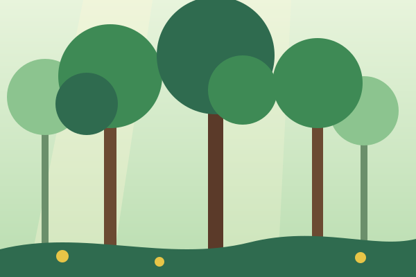
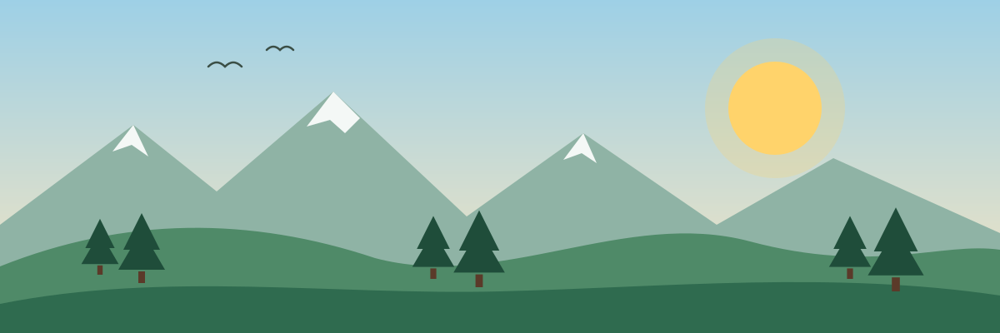
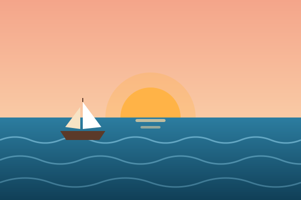
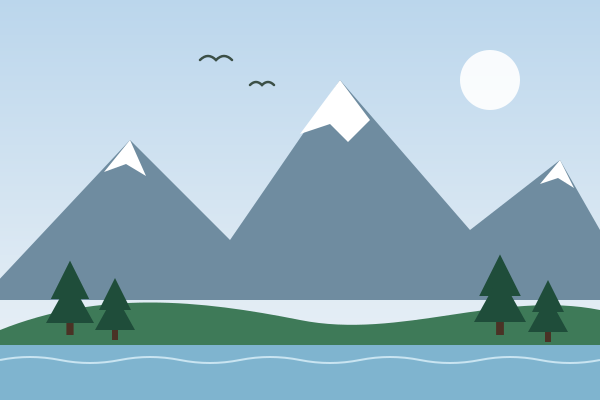

Florestas
Por que as florestas são tão importantes
Elas abrigam uma enorme variedade de vida, ajudam a regular o clima e protegem o solo e os rios.
Um blog para conhecer e cuidar da natureza

Este blog nasceu da vontade de entender melhor o mundo natural. Aqui você encontra textos sobre florestas, oceanos e montanhas, uma explicação dos principais biomas do planeta, o caminho que a água percorre e dicas simples para cuidar do meio ambiente no dia a dia.

Elas abrigam uma enorme variedade de vida, ajudam a regular o clima e protegem o solo e os rios.

Da superfície ao fundo escuro, os mares guardam ecossistemas incríveis e ajudam a controlar o clima.

A neve e as chuvas das montanhas alimentam rios que abastecem cidades e plantações.
Bioma é um grande conjunto de ecossistemas com clima, solo, plantas e animais parecidos.
Muita chuva, calor o ano todo e uma biodiversidade enorme.
Gramíneas e árvores espaçadas, com uma estação seca e outra chuvosa.
Pouquíssima chuva e grandes diferenças de temperatura entre o dia e a noite.
Frio intenso, solo congelado e vegetação rasteira.
Quatro estações bem marcadas e árvores que perdem as folhas no outono.
Cobre a maior parte da superfície do planeta e abriga uma vida muito diversa.
A água do planeta nunca para: ela muda de forma e de lugar em um ciclo contínuo.
Cerca de 71% da superfície da Terra é coberta por água, e a maior parte dela é salgada.
A natureza não precisa de nós, mas nós precisamos dela. Cuidar do planeta é cuidar de nós mesmos.